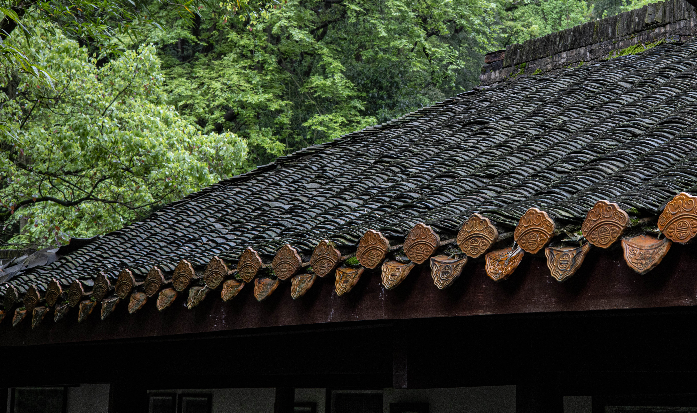

2021年4月2日 / 1 阅读 / 0 评论 / 3 点赞
岳麓书院是中国历史上赫赫闻名的四大书院之一，坐落于中国历史文化名城湖南长沙
湘江西岸的岳麓山脚下，作为世界上最古老的学府之一，其古代传统的书院建筑至今
被完整保存，每一组院落、每一块石碑、每一枚砖瓦、每一支风荷，都闪烁着时光淬炼的
人文精神。1988年，岳麓书院建筑群被国务院批准为第三批全国重点文物保护单位。
岳麓书院历经千年而弦歌不绝，学脉延绵。北宋开宝九年（公元976年），潭州
太守朱洞在僧人办学的基础上，由官府捐资兴建，正式创立岳麓书院。北宋祥符八年
（公元1015年），宋真宗召见岳麓山长周式，御笔赐书“岳麓书院”四字门额。 [1]
嗣后，历经南宋、元、明、清各代，至清末光绪廿九年（公元1903年），岳麓书院
与湖南省城大学堂合并改制为湖南高等学堂，沿用书院旧址。中华民国15年（公元1926年）
，湖南高等学堂正式定名湖南大学，仍就书院基址扩建至今。
这次旅行让我印象最深的是一场在谢子龙艺术馆展出的关于希望工程解读的一组图片，
墙上的那个女孩我还仍然记得出现在小时候的语文课本上，那时候的我还没有意识到这件
希望工程对于他们的改变是人生轨迹的改变，是留守儿童的唯一希望，也是全家人全村人
的希望，感恩我们出生在一个强大的祖国，用我的几张旅拍照片来描述。
